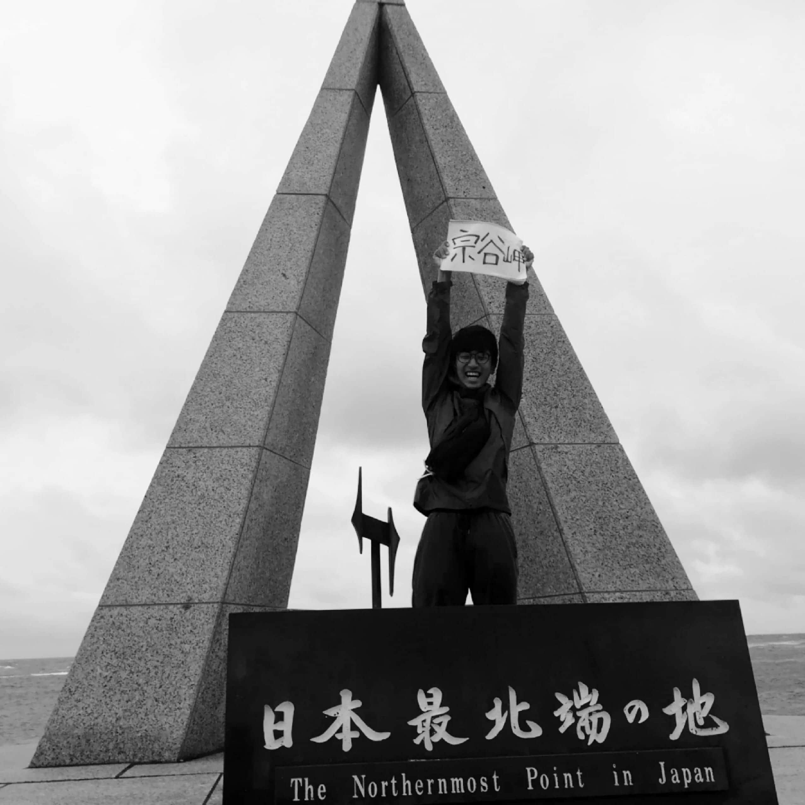

ヒッチハイク日本一周

ある朝家を出た。徒歩で大通りまで行き、そこからヒッチハイクで最南端の佐多岬へ。そのまま最北端の宗谷岬へ。その後ヒッチハイクで家の近くまで帰ってきて、徒歩で帰宅する。「移動は徒歩かヒッチハイクのみ」「宿は使わない、基本的には野宿をする」がマイルール。結果、41台の車を乗り継いで、達成することができた。さらに今回の活動で使ったお金は「ゼロ円」（フェリー代を除く）。ご飯や飲み物をすべてヒッチハイクでお世話になった方にごちそうして頂いた。また、野宿を基本としていたが、ヒッチハイクでお世話になった方の家に泊めてもらうこともしばしば。最初は自分との戦いという挑戦だったが、最終的には「人の優しさに触れる旅」となった。すべての関わって下さった方々に、心からの感謝を伝えたい。本当にありがとうございました。